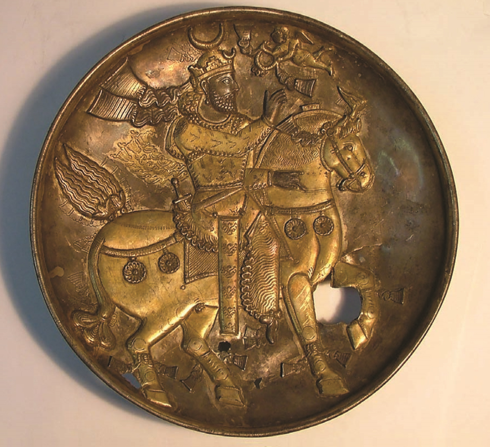

Iranian Shahs
(247BCE-637CE)
Aršak
Aršak 2
Friyapāt
Frahāt
Ērān-spāhbed
(Army Chief)
spāhbedān-spāhbed, artēštārān-sālār: all denote the regular commander-in-chief, apparently chosen from the House of Suren.
Wuzurg-framadar
an Elit who could become the commander-in-chief and was entrusted to engage in diplomatic negotiations
Pushtigban-Salar
(Head of the royal guard)
The pushtigban was an elite military unit of the Parthian/Sasanian Empire, charged with the protection of the Iranian Emperor.
Aswaran
(cataphracts)
The Aswārān (singular aswār), also spelled Asbārān and Savaran, was a cavalry force that formed the backbone of the army of the Parthian/Sasanian Empire. They were provided by the aristocracy, were heavily armored and ranged from archers to cataphracts.
Azadan
(~1400 years later it will known to west as Knights)
This class of nobility was first formed in Parthian times, and was carried over into the Sasanian state, where they were a force to be reckoned with. They accompanied the king in the wars and displayed great courage and discipline. They are clearly the forerunners and founders of the "Knights" of later history.[